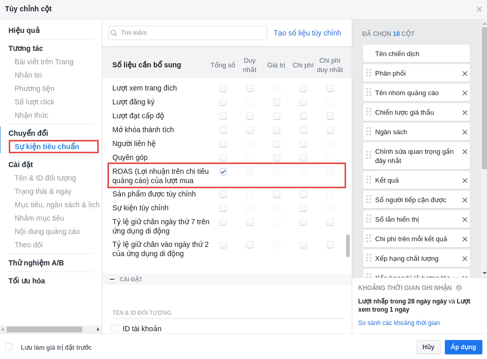

Tạo Facebook Event tối ưu ADS và thống kê ROAS
Facebook Event trong AhaChat có cách thức hoạt động tương tự giống như Facebook Pixel. Nghĩa là chủ bot có thể lưu lại các chuyển đổi khi khách hàng tương tác với bot để ghi lượt chuyển đổi, tối ưu hóa cho chuyển đổi và tạo đối tượng.
Hãy xem danh sách các sự kiện tiêu chuẩn dưới đây dành cho Facebook Event.
| Hành động trên bot | Mô tả | Mã sự kiện tiêu chuẩn |
|---|---|---|
| Mua hàng | Hoàn tất giao dịch mua hàng, thường biểu thị bằng việc nhận đơn đặt hàng, xác nhận việc mua hàng hoặc bằng biên lai giao dịch. Ví dụ: chuyển đến trang Cảm ơn hoặc trang xác nhận. | Purchase |
| Thêm Lead | Thêm khách hàng tiềm năng vào danh sách. Ví dụ: khi khách hàng cung cấp số điện thoại và địa chỉ. | Lead Generation |
| Thêm vào giỏ hàng | Thêm một mặt hàng vào giỏ hoặc rổ hàng. Ví dụ: nhấp vào nút Thêm vào giỏ hàng trên trang web. | AddToCart |
| Xem nội dung | Lượt truy cập vào trang web bạn quan tâm. Ví dụ: trang đích hoặc trang sản phẩm. Thông số Xem nội dung cho bạn biết liệu có ai truy cập vào URL của trang web hay không, chứ không chỉ ra họ làm gì hay nhìn thấy gì trên trang web đó. | ViewContent |
| Thêm thông tin thanh toán | Thêm thông tin thanh toán của khách hàng trong quy trình thanh toán. Ví dụ: một người nhấp vào nút để lưu thông tin lập hóa đơn. | AddPaymentInfo |
| Thêm vào danh sách yêu thích | Thêm các mặt hàng vào danh sách yêu thích. Ví dụ: nhấp vào nút Thêm vào danh sách yêu thích trên trang web. | AddToWishlist |
| Hoàn tất đăng ký | Khách hàng gửi thông tin để nhận được dịch vụ mà doanh nghiệp bạn cung cấp. Ví dụ: đăng ký nhận thông tin qua email. | CompleteRegistration |
| Liên hệ | Điện thoại, SMS, email, chat hoặc hình thức liên hệ khác giữa khách hàng và doanh nghiệp của bạn. | Contact |
| Tùy chỉnh sản phẩm | Quá trình tùy chỉnh sản phẩm thông qua công cụ cấu hình hoặc ứng dụng khác mà doanh nghiệp của bạn sở hữu. | CustomizeProduct |
| Quyên góp | Quyên góp tiền cho tổ chức hoặc mục đích xã hội của bạn. | Donate |
| Tìm vị trí | Khi ai đó tìm một trong các vị trí của bạn qua web với ý định ghé thăm. Ví dụ: tìm kiếm sản phẩm và phát hiện thấy sản phẩm đó có bán tại một trong các cửa hàng của bạn tại địa phương. | FindLocation |
| Bắt đầu thanh toán | Bắt đầu quy trình thanh toán. Ví dụ: nhấp vào nút Thanh toán. | InitiateCheckout |
| Khách hàng tiềm năng | Khách hàng gửi thông tin và hiểu rằng doanh nghiệp của bạn có thể liên hệ với họ vào một ngày nào đó. Ví dụ: gửi mẫu hoặc đăng ký dùng thử. | Lead |
| Lên lịch | Đặt lịch hẹn đến thăm một trong các vị trí của bạn. | Schedule |
| Tìm kiếm | Tìm kiếm trên trang web, ứng dụng hoặc tiện ích khác của bạn. Ví dụ: tìm kiếm sản phẩm hoặc chuyến du lịch. | Search |
| Bắt đầu dùng thử | Bắt đầu dùng thử miễn phí sản phẩm hoặc dịch vụ mà bạn cung cấp. Ví dụ: đăng ký dùng thử. | StartTrial |
| Gửi đơn đăng ký | Gửi đơn đăng ký sản phẩm, dịch vụ hoặc chương trình mà bạn cung cấp. Ví dụ: thẻ tín dụng, chương trình giáo dục hoặc việc làm. | SubmitApplication |
| Đăng ký | Bắt đầu đăng ký trả phí cho sản phẩm hoặc dịch vụ mà bạn cung cấp. | Subscribe |
Trong danh sách sự kiện thì được dùng nhiều nhất là sự kiện Purchase, vì bạn có thể dựa vào đó để tính Tổng lợi nhuận trên chi tiêu quảng cáo (ROAS) từ giao dịch mua hàng trên bot. Điều này dựa trên giá trị của tất cả chuyển đổi do Facebook Event ghi lại trên bot và được ghi nhận cho quảng cáo của bạn. Ngoài ra, sự kiện Purchase giúp FB tối ưu hoá quảng cáo trên Facebook Ads và mở ra một loại quảng cáo mới "Tối đa hoá số lượt chuyển đổi nhắn tin" khi bạn đủ điều kiện.
Còn tất các sự kiện còn lại bạn chỉ có thể theo dõi trên Facebook Analytics.
Ok, giờ thì bắt đầu tạo Facebook Event trong AhaChat như sau:
1. Tạo Facebook Event trong bot
(1) Vào menu Trả lời tự động > Tạo kịch bản chứa Facebook Event.
(2) Tạo block Facebook Event.
(3) Cài đặt sự kiện cần theo dõi. Số lượng và Giá trị có thể truyền thuộc tính vào
2. Theo dõi sự kiện trên FB
2.1 Theo dõi trên Quảng Cáo
(1) Chọn Tùy chỉnh cột.
(2) Cài đặt hiển thị ROAS.

(3) Kết quả thành công.
2.2 Theo dõi trên Analytics (đã ngừng hỗ trợ)
Vào Facebook Analytics > Sự kiện
3. Trường hợp áp dụng
- Để theo dõi tỷ lệ chuyển đổi cho một hành động mục tiêu. Giả sử bạn có một quy trình tạo khách hàng tiềm năng trong bot của mình kết thúc bằng nút Mua Hàng. Nút này sẽ liên kết đến webform và khi người dùng điền thông tin số điện thoại, địa chỉ vào thì di chuyển tới block Facebook Event với sự kiện được cài đặt sẵn là Purchase kèm giá tiền của sản phẩm để lưu sự kiện.
- Để theo dõi những người dùng muốn nhận được hỗ trợ từ nhóm của bạn thông qua Live chat. Đầu tiên, tạo một nút "Gặp N.V tư vấn" tại block Hội Thoại. Sau đó, khi người dùng bấm vào nút này thì di chuyển tới block Facebook Event với sự kiện được cài đặt sẵn là Contact để lưu sự kiện.